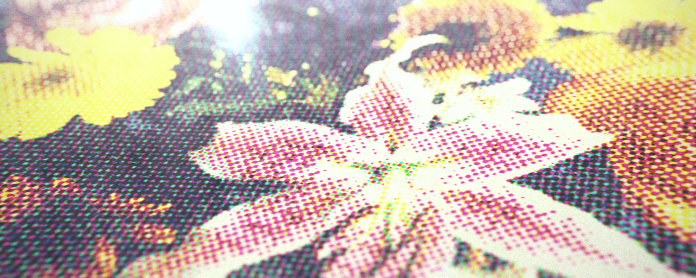

Creating a halftone effect using HTML / CSS
Collision detection algorithm explainer with live demos
Sprite sheet animations with CSS
Stealth game AI algorithm with playable demos
Programming a split keyboard with QMK